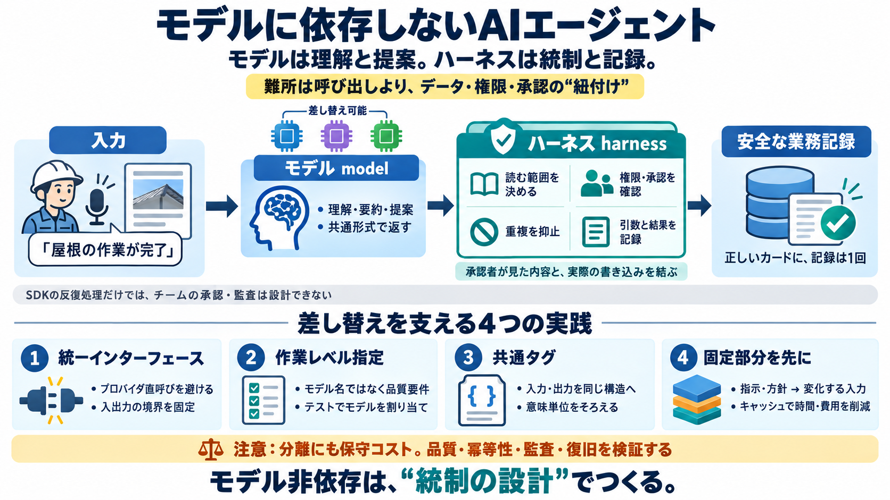

Best AI Agent Frameworks 2026: Alice Labs Top 10 Ranked
deferred nodes, pre/post model hooks, content-block streaming); Microsoft Agent Framework 1.0 (GA Apr 3 2026 — the unifi…

deferred nodes, pre/post model hooks, content-block streaming); Microsoft Agent Framework 1.0 (GA Apr 3 2026 — the unifi…
# AG2 vs. CrewAI vs. LangGraph vs. OpenAI Agents SDK: Framework Showdown (2026) HONEST comparison of AG2, CrewAI, LangG…
The gap is widest on long-horizon work. A bare frontier model was verified at about 30% on ARC-AGI-3; Prime Agent's harn…
OpenAI’s updated Agents SDK represents a strategic evolution, prioritizing the security and practicality required for en…
OpenAI’s updated Agents SDK represents a strategic evolution, prioritizing the security and practicality required for en…